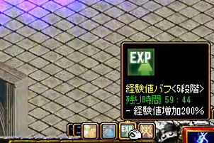

PTバフ「宝物地図」2022
宝箱の入手手順
バフの効果一覧
2005年より実装されていた宝物地図システムがリニューアルされて「バフ」という形で提供されるようになりました。
従来の宝の地図とは違いMAP上を走る必要はなく、ソロでもパーティーでもバフを得ることができます。
宝箱の入手手順

モンスター討伐時に対象のモンスターの真下に宝箱がドロップします。
登場した宝箱を15分間(900秒)開封しないと自動的に消えます。
モンスター狩り数によって宝箱が現れる確率が増加します。
個人狩り時、自分のレベルと+-100未満で差が出るモンスターを200匹狩る時、1段階目になりチェック周期が1分減少します。
(1段階:宝箱ドロップ確率30%増加+チェック周期1分減少)
| 段階 | 宝箱ドロップ確率 | チェック周期 |
|---|---|---|
| 0 | 5% | 10分 |
| 1 | 6.5% | 9分 |
| 2 | 8.4% | 8分 |
| 3 | 10.9% | 7分 |
| 4 | 14.2% | 6分 |
| 5 | 18.5% | 5分 |
※MAP移動判定時に段階リセット
※PTの場合、PTメンバーと+-100レベル差のモンスターを討伐した場合はカウント対象外。
※PTの場合も個人単位でチェック周期が適用されます。
※カウント増加の定義は「モンスターにダメージを与えること」で、宝箱入手の条件は「敵を討伐すること」である点に注意。
※RSオーラから登場する闇商人からも宝箱をドロップする可能性があります。
- 宝箱開封時に自動入力防止文字が表示されるので入力します。

文字入力に何回失敗しても宝箱は消えません。
取引マークのボタンを押すことで内容を変えられます。
文字入力画面を出したまま移動やスキルを使うことも可能です。
※注意※ MAPに表示後、鯖落ち・MAP移動が発生すると宝物地図は消滅します。
他のPTメンバーが宝箱を同時に出した場合、消滅することがあります。
PTメンバーが同時に宝箱を出した場合の回避は以下の通り。(2023.1現在)
プレイヤーＡが温存してて残り300秒、
プレイヤーＢの箱が出て残り890秒の場合
Ｂ－＞Ａの順であけるとどちらも宝箱をえられます。（後から出た人優先）
逆にＡからあけるとＢの宝箱は消えます。
もしくは、秒数を完全一致させることで同時にあけることでも回避できます。
（同時に出てしまった場合に800秒で開封…といった具合に。）
バフを入手すると、画面右下にその詳細が表示されます。

バフ獲得の例
■バフ獲得パターン1①キャラクターAが、狩りをして宝箱を出す。経験値バフLv1を獲得する。
②キャラクターBがパーティーに参加する。
③キャラクターAが宝箱を出す。経験値バフLv2と、特殊アイテムバフLv1獲得する。
キャラクターBには経験値バフLv1と、特殊アイテムバフが付かない。
⇒パーティーを組んでいても個人バフは個別に配布されます。
■バフ獲得パターン2
①キャラクターAとBがパーティーを組む
②キャラクターAが宝箱を出す。経験値バフLv1と、ドロップ率Lv1バフを獲得する。
キャラクターBに、ドロップ率バフが付いた。
⇒パーティーを組んでいる場合、ドロップ率バフはパーティーメンバー全員に付与され、
ドロップ率バフをパーティーメンバーが取得すると、
メンバー全員のドロップ率バフのLvが上昇します。
■バフ獲得パターン3
①キャラクターAとBがパーティーを組む
②キャラクターAが宝箱を出す。経験値バフLv1を獲得する。
③キャラクターBが宝箱を出す。経験値バフLv1を獲得する。
キャラクターAの経験値バフはLv1のまま。
④キャラクターBが宝箱を出す。経験値バフLv2を獲得する。
キャラクターAの経験値バフはLv1のまま。
⇒「経験値バフ」「ゴールドドロップ量増加バフ」「Mobリポップ速度増加」
「特殊アイテム獲得バフ」は宝箱を開けたプレイヤーにだけ
バフLv上昇効果が付与され、宝箱を開けていないパーティーメンバーの
バフLvは上昇しない。
欲張りレビット
1300Lvまでの場合、一定確率で大きめの経験値を獲得できる「欲張りレビット」が出現します。
※欲張りレビットは他のキャラクターにも見えますが、
他のキャラクターは攻撃してもダメージを与えることはできません。
※Lv1300以上のキャラクターの場合、宝箱を開封しても欲張りレビットは登場しません。
※Lv950以降、欲張りレビット討伐時に得られる獲得経験値量は急激に低下します。
※欲張りレビットで得られる経験値はスフィアー系アイテム等やイベントで変動しません。
※欲張りレビットで得られる経験値はキャラクターレベルごとに違います。
レベルが高くなればなるほど、得られる獲得経験値量が低下します。
登場後1分間の制限時間があり、討伐時に大量の経験値を獲得できます。

欲張りレビットは時々反撃スキルを使用して攻撃者の最大HP比例ダメージを付与します。
HP比例のため、手数で攻撃するとこちらのHPに依らず削りきられる可能性があるため注意。
【欲張りレビット レベルごとの経験値一覧（仮）】
※情報募集中・・・
| Lv | 経験値 |
|---|---|
| 1～100 | ？万 |
| 100～199 | 1380万 |
| 600～699 | 2.08億 |
| 900～910 | 230億 |
| 910～920 | 320億 |
| 920～950 | 410億 |
| 950～999 | 12.6億 |
| 1000～1099 | 13.6億 |
| 1100～1199 | 13.8億 |
| 1200～1299 | 13.8億 |
| 1300～ | 0 |
バフの効果一覧
・全て持続時間60分、上書き時にレベル上昇(MaxLvまで)。・パーティーから抜けるとPTバフ効果は受けられなくなります。
・PTが解散されると、自動的にPTバフ効果は消滅します。
| バフの種類 | レベル | 適用確率 | 効果 |
|---|---|---|---|
| 空 | 0 | 20％ | 適用効果なし |
| 経験値バフ |
1 | 100% ＜ドロップされた宝箱を開く場合はすぐに1段階から順番に累積＞ |
経験値100％上昇 |
| 2 | 経験値150％上昇 | ||
| 3 | 経験値200％上昇 | ||
| ドロップ率バフ （個人時バフOFF） ※PTで最大のバフに従う |
1 | 15％ | PTドロップ率100％ |
| 2 | 3% | PTドロップ率120％ | |
| 3 | 1% | PTドロップ率140％ | |
| 4 | + | PTドロップ率160％ | |
| 5 | + | PTドロップ率200％ | |
ゴールドドロップ率増加 ゴールドの限界値を無視して上昇 |
1 | 15％ | ゴールドドロップ量増加2倍 |
| 2 | 3% | ゴールドドロップ量増加3倍 | |
| 3 | - |
ゴールドドロップ量増加4倍 | |
| モンスターリポップ速度 （該当効果のPTメンバーが倒したモンスターのみ） （+-100以下） |
1 | 15％ | リポップ時間が2秒短縮 |
| 2 | 3% | リポップ速度が4秒短縮 | |
| 3 | 1% | リポップ時間が6秒短縮 | |
| 4 | + | リポップ時間が8秒短縮 | |
| 5 | + | リポップ時間が15秒短縮 | |
| 特殊アイテム獲得バフ （該当効果のPTメンバーが倒したモンスターのみ） |
1 | 6% | - 冒険団コイン 0.5% |
| 2 | 3% | - 冒険団コイン 0.5% - 紛失した冒険団Box 0.3% |
|
| 3 | + | - 冒険団コイン 0.5% - 紛失した冒険団Box 0.3% - 不思議な紺碧の壺 0.2% |
|
| 欲張りレビッド生成 （1～1299Lvまで登場） |
1 | 15％ （1300Lv以降からゴールドドロップ量増加、モンスターリポップ速度増加、特殊アイテム獲得バフに5%ずつ分配される。) |
討伐時大量の経験値を与えるモンスター |
備考
- RS探偵ポイントは中身に依らず1固定で獲得。（開封した本人に適用）- 2022/9実装直後はバフが切れた後に再度バフを取得するとバフの段階が継続されていました。
- エフェクト上の不具合で通常の宝箱がバフ宝箱として見えることがあります。
[参考]Ver0.0780アップデート、新規追加内容をご紹介！(公式サイト)
[参考]Ver0.0696アップデート、新規追加内容をご紹介！(公式サイト)